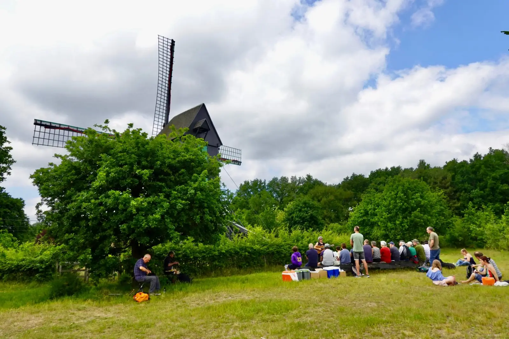
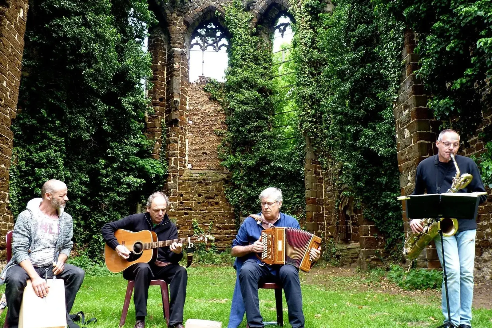
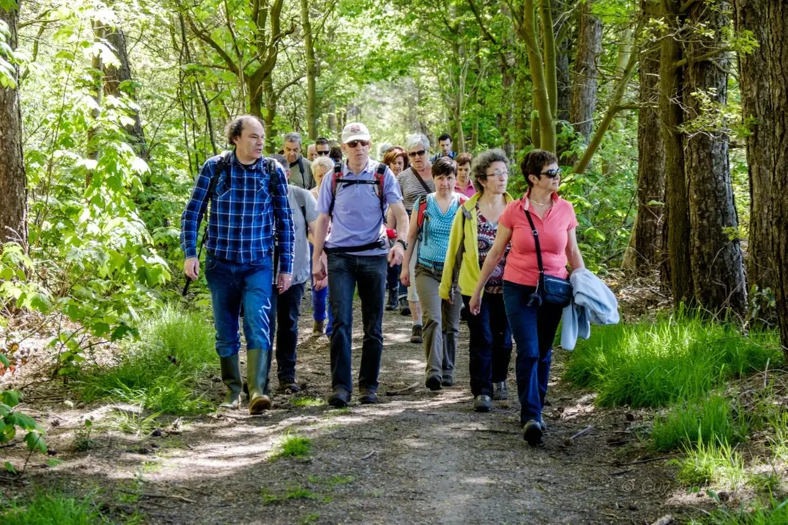

Le concept
Une promenade musicale réunit promeneurs et musiciens dans un paysage. Vous parcourez quelques kilomètres à travers bois, landes, villages ou sites patrimoniaux, et en chemin résonnent de courtes prestations acoustiques : au bord d'un ruisseau, près d'une chapelle, sur une colline.
Les promenades musicales font partie de Merodefestival depuis la première édition en 2015. Nous avons appris ce qui fonctionne : de petits groupes, de la musique acoustique et le respect de l'environnement.
Comment ça marche
1. Choisissez une promenade.
- 3 km avec 2 artistes
- 5 km avec 3 artistes
- une promenade festival de 7 à 8 km avec quatre haltes musicales
2. Choisissez un point de départ. Nous cherchons ensemble le point de départ idéal, en tenant compte de vos contraintes pratiques.
3. Profitez. Nous nous occupons des artistes et de l'organisation : itinéraire, parking, catering et concertation avec les gestionnaires des terrains.
Déjà réalisé
En 2025, les promenades passaient par Westmeerbeek, Langdorp, Tongerlo et Veerle-Heide. Pour ‘Ode aan de Merode’, nous avons créé huit promenades dans le parc paysager, et dans notre podcast de promenade, des musiciens folk vous emmènent en chemin.
Les promenades musicales sont un concept de Merodefestival (WESP vzw), avec le soutien du Gouvernement flamand, arts & patrimoine.


